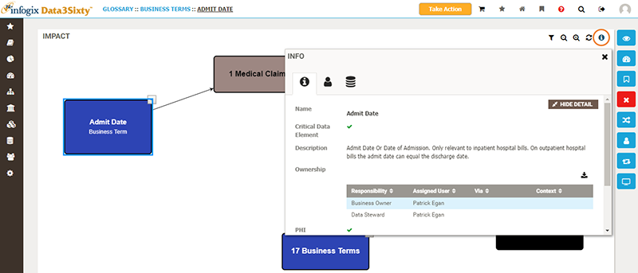
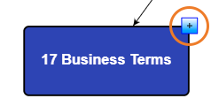
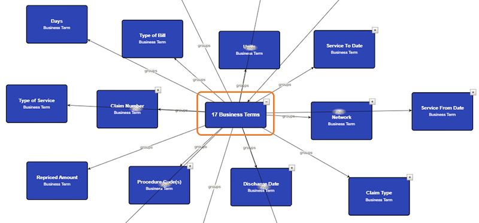

The impact analysis screen gives you an overview of the relationships and predicates between artifacts, allowing you to easily visualize the impacts of any potential change on related artifacts.
When you are viewing an artifact in Infogix Data3Sixty, you can open the impact analysis page by clicking the Impact button on the right of the screen:
To see more information about a particular item, select the item in the visual map, then click the Information button in the top right corner to display ownership, responsibility and technical details:

You can expand the diagram to show related artifacts by clicking the Add button in the top right corner of an item:


If you are viewing the impact analysis screen for an item with a large number of predicate relationships or artifact types, you can use the filter to simplify the analysis diagram by clicking the Filter button in the top right corner:
For example, you may want to restrict the display to show only Business Terms. In this case, you would remove the selection from the other types; Report, Process and Application.